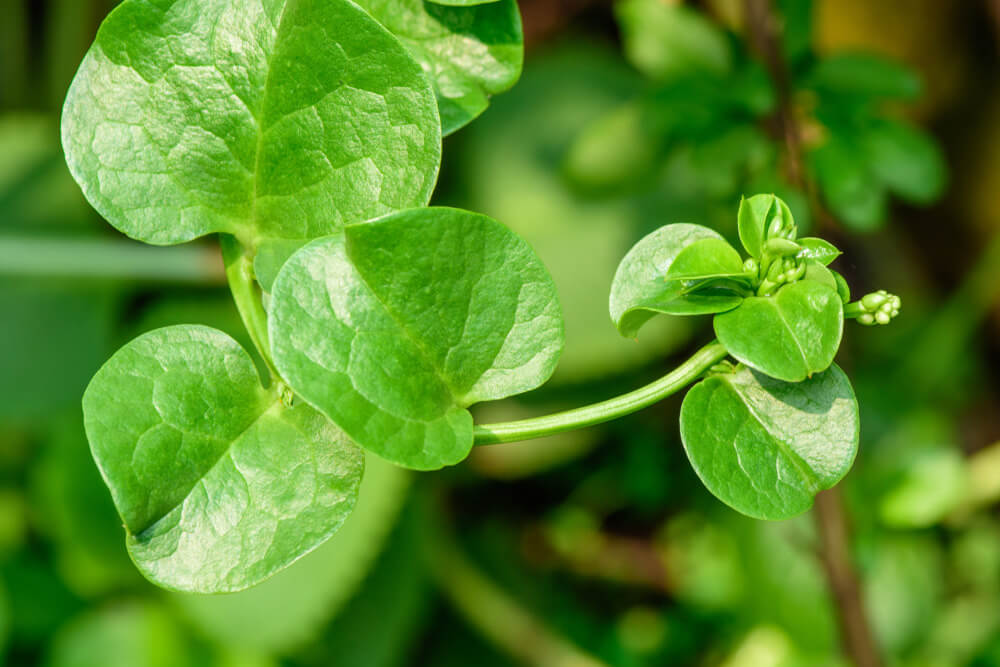

BERTALHA
Originária da Índia, a bertalha é uma trepadeira conhecida também como espinafre-indiano, que apresenta diversas propriedades medicinais e benefícios à saúde.
A verdura verde-escura possui folhas ricas em nutrientes, como cálcio, ferro e vitaminas A, B, B2, B5 e C, que podem ser refogadas e utilizadas na preparação de tortas, sopas e saladas.